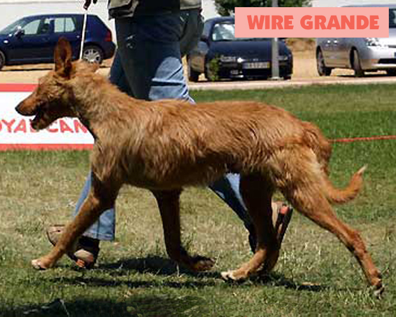
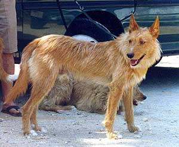

Portugalský podengo
Portugalský podengo (portuguese podengo) je staroveké lovecké plemeno – pri love využíva najmä zrak a čuch – pôvodom z Portugalska. Podengo sa vyskytuje v troch veľkostiach – malý (pequeno), stredný (medio) a veľký (grande), každý jemnosrstý alebo hrubosrstý.
Grande, medio a pequeno
Veľký, Grande podengo, najvzácnejší zo všetkých troch sa pravdepodobne vyvinul z väčších stredných. Podobne aj malý podengo sa zrejme vyvinul zo Media. Pre podenga je typická široká škála zafarbenia srsti, pravdepodobne kvôli miešaniu s inými plemenami, teriérmi alebo predkami čivavy, spred niekoľkých storočí. Malý podengo je zrejme najmenší lovecký pes.
- 
- 